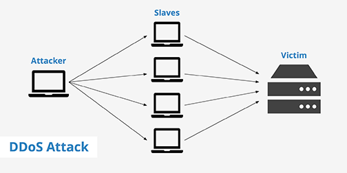

My name is Isabella Montoya, or imonto01. I was hired to break in to Ashley Wicks' client-side and server-side code for the NotUber project to find and provide solutions for vulnerabilitites. Client Ming has requested I find at least 3 vulnerabilities.
Methodology
I started by reading through the links provided by Ming on the WebProgramming website. I then checked Ashley's code to see if it sanitized input or not. Since it didn't, I decided to try a few methods taugh in class: curling a link to an image instead of a username, putting [$ne] after the username in the query string (like such: https://whispering-temple-81385.herokuapp.com/vehicle.json?username[$ne]=JANET), and curling JavaScript in place of a username. The first and third attacks worked, but the second one did not, so I set out on finding a third vulnerability. I chanced upon a post on Piazza that talked about overloading the server, and did more reseacrh on that, and chose it to be the third vulnerability. After this, I looked for ways to resolve all three vulnerabilities, and put together this document.
Abstract of Findings
Due to the input not being sanitized, I was able to inject a link to an image and a JavaScript alert into the database disguised as a username. When I accessed / and it tried to diplay all the passenger information, it would pull up the link or code and execute it. Additionally, there are no preventative measures in place to prevent the server from overloading and possibly charging Ms. Wicks' Heroku account.
Issues Found
Issue 1: Cross Site Scripting (XSS) using Image Link
Location:/rides
Severity:
Light-to-medium severity. I was able to inject a link to a spiderman meme. Could wreak havoc if used maliciously.
Description:
For this vulnerability, I simply curled
"curl --data "username=&lat=55&lng=66" https://whispering-temple-81385.herokuapp.com/rides"
and since the input is not sanitized, it is accepted exectly as I sent. Therefore the username is returned as a link to an image, which is shown when accessing https://whispering-temple-81385.herokuapp.com/
Proof:
Here is the code I curled to /rides. I used an image link instead of a username.
And here is the resulting output on index page:
Resolution:
Sanitize input. Use something like input = input.replace(/[^\w\s]/gi, ''); to remove anything that could turn into code, such as > and < signs used for img tags.
Issue 2: Cross Site Scripting (XSS) using JavaScript
Location:/rides
Severity: Medium-to-high severity
Description:
For this vulnerability, I simply curled
"curl --data "username=&lat=55&lng=66" https://whispering-temple-81385.herokuapp.com/rides
and since the input is not sanitized, it is accepted exectly as I sent, and therefore the username is returned as a JavaScript code that sends an alert to the page, which is shown when attempting to access https://whispering-temple-81385.herokuapp.com/
Proof:
Here is the code I curled to /rides. I submitted JavaScript code instead of a username.
And here is the resulting output on index page:
Resolution:
Like issue 1 above, sanitizing input is the best way to prevent this. Use something like input = input.replace(/[^\w\s]/gi, ''); to remove anything that could turn into code, such as > and < signs used for <script> tags.
Issue 3: Server Overloading
Location: submitting data to database through /rides
Severity: Pretty Damn High
Description:
If I or a malicious attacker decided to send so much information to the server (with images it would take less time), it would overload and stop working. It could cause a lot of damage by disrupting service (usually the main goal), increasing costs, and possibly losing data. If the service being attacked is important to the health of people, such as an Emergency Line, the consequences could be terrible and people could even die due tot he attack.
Proof:
Since this would likely take a while to do single-handedly (Denial of Service, or DoS), and I dont want to pay to rent a bunch of computer-bots (Distributed Denial of Service, or DDoS), this is a theoretical vulnerability. Below is an example of what a DDoS attack theoretically looks like.

Resolution:
Though it is diffucult to defend against a DDoS attack, there are ways to do it. One site advocatess for the use of a collection of reverse proxies, which act as bouncers do at a nightclub. They distribute the traffic, reducing the risk of a flood of attacks.
Conclusions
I learned that there are many ways of breaking a site if the site is not propery secured against common and simple-to-solve vulnerabilities. XSS and DoS/DDoS attacks are two very different but highly effective ways of attacking. I recommend sanitizing input and possibly restricting the length of input if possible to prevent XSS attacks, and deploying a collection of reverse proxies to prevent ot minimize the extent of a DDoS attack.